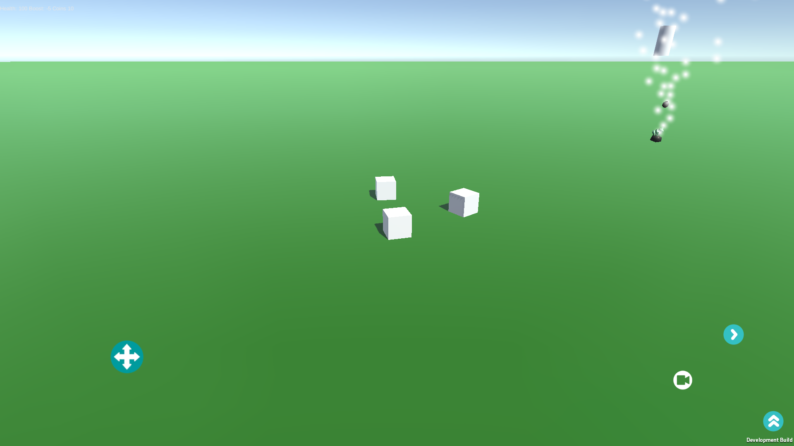

I've enjoyed developing games since high school, learning and trying out different engines and programs such as Unreal and Flash but lately I've prefered using Unity for it's portability and mobile applications. I’ve taught myself how to use the different sensors of a mobile device for controls, how to simulate virtual reality on mobile devices, and general game development concepts.
In my Freetime...
Skyera (Android mobile game):
Designed, programmed, and released the entirety of the first iteration of my multi platform mobile game on the Google Play marketplace.
Tested my skills as a C# programmer and pushed the limitations of the Unity3D program spending more than 400 hours personally programming the game
My game utilizes a 3D environment and powerful physics engine to generate a fresh, open world experience for the player. I'm currently working on an update to the game, fixing bugs, adding models, and making the game look cleaner. I'm currently working on adding UI art to the hud and enemies for the player to fight.
Link to the game's Google Play app page

Gameplay demo of game
The link below is the first prototype of my current Unity project
Game Link
The game begins by allowing the player to fly a cube through 3D space. The goal of the game is to use the boost button to destroy the randomly generated capsules and collect the boost gems and coins they drop. Going through the floating rectangle will bring you to the next phase of the game.
In this scene the player controls a cube on the ground fighting other cubes that jump at the player. If the player dies or if they press the button at the top of the screen it will lead them to the next part of the game. This was the toughest scene to program, I had some challenges getting the virtual joystick to rotate the player correctly and getting the weapon capsule and sphere to correctly follow the player without interfering with the player's model.
The last scene is simply a playground for the player to interact with the items they've collected and by going though the rectangle, the player will be returned to the original scene.